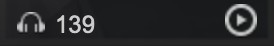
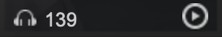
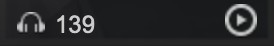
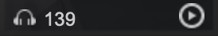
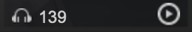

更换头像
青禾
0
动态
3
关注
0
粉丝
个人介绍:若心酸心酸
所在地区:江苏省-苏州市
年龄:95后
社交网络:
听歌排行
累计听歌436首
所有时间
最近一周
1.
心安理得
- 王天戈
100次
2.
后来
- 刘若英
90次
3.
像鱼
- 王壹浪
80次
4.
明明
- 周兴哲
70次
5.
whistle
- Flo Rida
60次
6.
红色高跟鞋
- 蔡健雅
50次
7.
打上花火
- Yuklri
40次
8.
china-X
- 徐梦圆
30次
9.
lemon
- 米津玄師
20次
10.
Gypsophila
- MoreanP
10次
查看更多 >
我创建的歌单 (1)

青禾喜欢的音乐

 
青禾喜欢的音乐

青禾喜欢的音乐

青禾喜欢的音乐

青禾喜欢的音乐